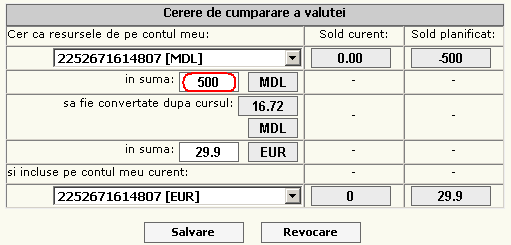

| |
||
|
|
La completarea contului de card a Clientului prin sistemul "Telebank", resursele sunt accesibile nu mai devreme de 2 ore, dupa executarea ordinului de Banca.
Pentru a efectua un schimb valutar, selectam contul MDL, in cimpul cont In suma introducem suma de bani care dorim sa o schimbam, celelalte cimpuri se compleateaza automat, unde este disponibila informatia: Curs, si Suma rezultata dupa ce a fost aplicat cursul de schimb. Tastam Salvare pentru a efectua operatia de schimb, iar Revocare pentru a sterge toate informatiile introduse
Coloanele: Sold curent ofera informatia despre banii pe contul curent, Sold planificat despre soldul rezultant dupa efectuarea operatiilor.
Pentru a efectua un schimb valutar, selectam contul valutar, in cimpul cont In suma introducem suma de bani care dorim sa o schimbam, celelalte cimpuri se compleateaza automat, unde este disponibila informatia: Curs, si Suma rezultata dupa ce a fost aplicat cursul de schimb. Tastam Salvare pentru a efectua operatia de schimb, iar Revocare pentru a sterge toate informatiile introduse
Coloanele: Sold curent ofera informatia despre banii pe contul curent, Sold planificat despre soldul rezultant dupa efectuarea operatiilor.
Aici se executa transferul de pe contul bancar sau contul de depozit pe contul de card.
Pentru a efectua un transfer Intern

Pentru a efectua un transfer selectam Sablonul dorit
Transfer general, se completeaza cimpurile respective, si se indica Suma